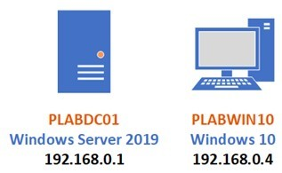
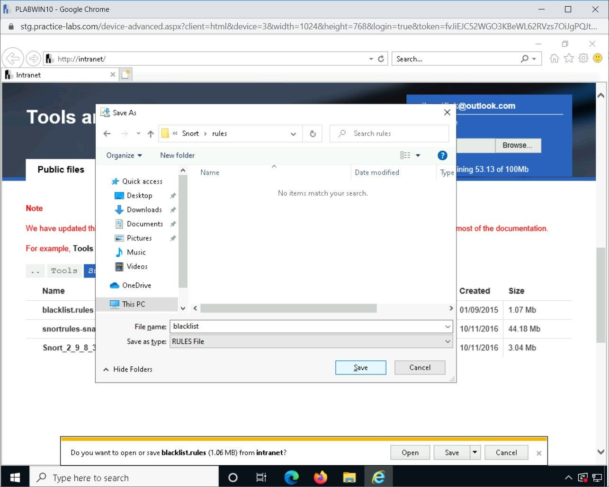
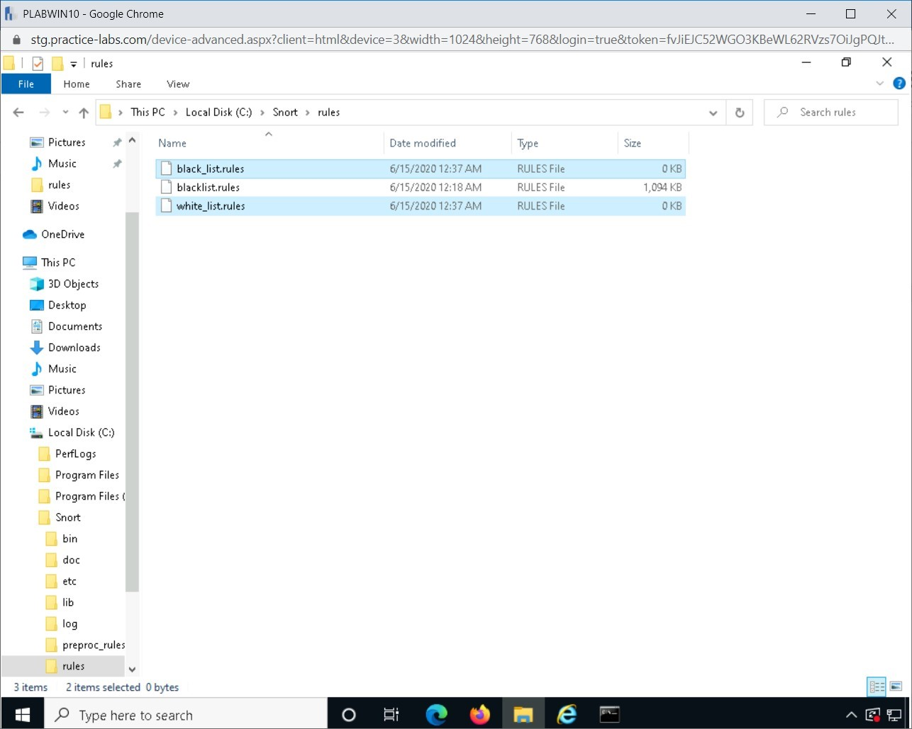
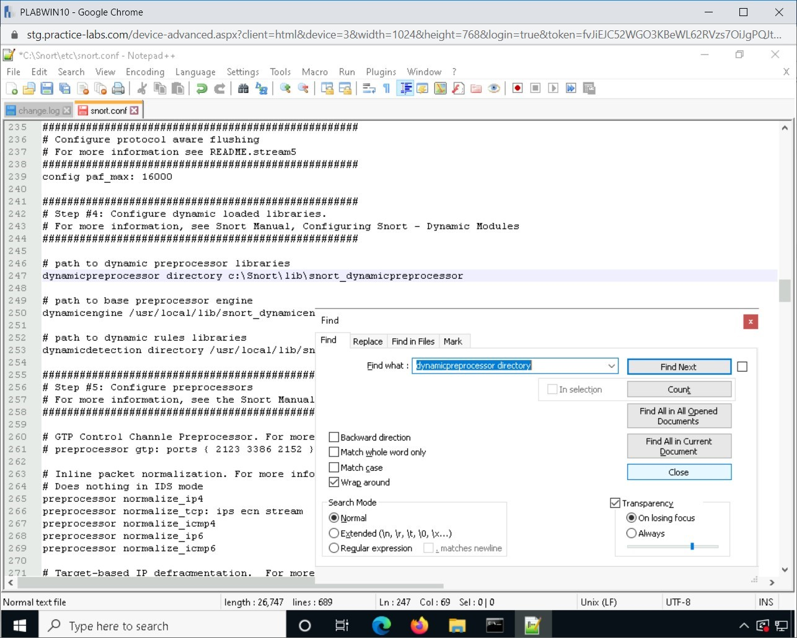
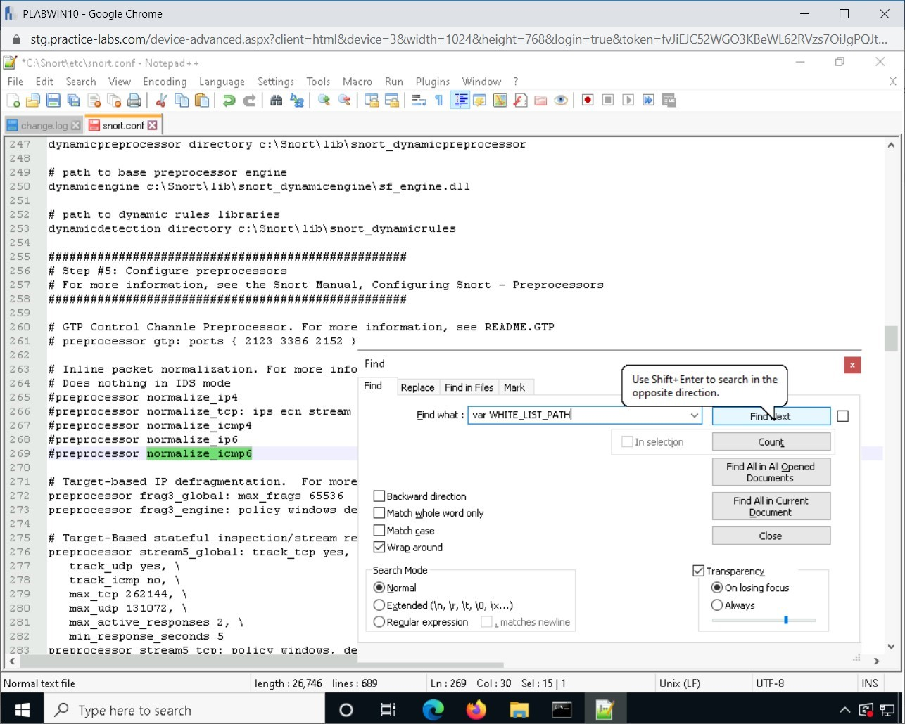

Introduction
9beca326-b493-4b0e-b3dc-d7dfb77df3c9
Welcome to the Improving Network Security Practice Lab. In this module, you will be provided with the instructions and devices needed to develop your hands-on skills.
dc640c20-9434-45ea-b7c2-6d4d6a196bfc
Learning Outcomes
In this module, you will complete the following exercises:
- Exercise 1 - Network Security
- Exercise 2 - Update Antimalware Signatures
- Exercise 3 - Work with Snort
After completing this module, you will be able to:
- Update Windows Defender
- Install Snort
- Download Snort Rules
- Running Snort Tool
- Create a Folder and the Rules File in the Snort Folder
- Modify the Snort Configuration File
- Re-run Snort IDS Tool
After completing this module, you will have further knowledge of:
- Data loss Prevention (DLP)
- Endpoint Detection and Response (EDR)
- Network Access Control (NAC)
- Sinkholing
- Port Security
Exam Objectives
The following exam objectives are covered in this lab:
- 3.2 Given a scenario, implement configuration changes to existing controls to improve security.
Note: Our main
focus is to cover the practical, hands-on aspects of the exam
objectives. We recommend referring to course material or a search engine
to research theoretical topics in more detail.
Lab Duration
It will take approximately 1 hour to complete this lab.
1b317064-7b0c-48e0-845c-05a2d99e80c5
Help and Support
For more information on using Practice Labs, please see our Help and Support page. You can also raise a technical support ticket from this page.
Click Next to view the Lab topology used in this module.
d2c53300-f951-45a9-9aa4-3d4ecae69e11
Lab Topology
During your session, you will have access to the following lab configuration.

Depending on the exercises, you may or may not use all
of the devices, but they are shown here in the layout to get an overall
understanding of the topology of the lab.
- PLABDC01 - (Windows Server 2019 - Domain Server)
- PLABDM01 - (Windows Server 2019 - Domain Member)
- PLABKALI01 - (Kali Linux 2019 - Linux Kali)
- PLABWIN10 - (Windows 10 - Domain Member Workstation)
- PLABCENTOS - (Centos 8 Linux - Stand-alone Linux Server)
- PLABALIENVAULT - (Alien Vault Linux Security Management Platform)
Click Next to proceed to the first exercise.
<
Home |
README >
CompTIA Cybersecurity Analyst (CySA+) Practice Labs
Exercise 1 - Network Security
Network security cannot be built based on a single
device or application. Some tools and applications complete the security
of a network. You can have multiple security devices and applications,
such as Intrusion Detection System (IDS), Intrusion Prevention System
(IPS), Network Access Control (NAC), firewall, and antimalware
applications.
In this exercise, you will learn about the different components of network security.
Learning Outcomes
After completing this exercise, you will have further knowledge of:
- Data Loss Prevention (DLP)
- Endpoint Detection and Response (EDR)
- Network Access Control (NAC)
- Sinkholing
- Port Security
Your Devices
This exercise contains supporting materials for CySA+.

Data Loss Prevention (DLP)
Data Loss Prevention or DLP is a set of rules that are defined to protect confidential and sensitive information. DLP,
as an application, contains several rules that help you identify the
type of data that users can share. For example, within an organization,
when DLP is implemented, it can scan outbound Emails and track if any kind of sensitive or confidential information is being shared.
You can have a rule defined that prevents sharing of
financial reports or sharing of credit card numbers in an Email or its
attachments. Without DLP, it is not possible to track such Emails with confidential information. However, with DLP implementation in place, as the administrator, you can define what type of information can the users share.
When you share information with the users within an
organization, you can set the permissions, such as forward or print. For
example, you send a confidential management decision to your colleague.
You, however, do not want a colleague to forward or print this Email.
Such restrictions can be defined in the form of permissions.
The key intent of DLP is to tackle insider threats and also to meet the regulation-driven privacy requirements. DLP has three key use cases:
- Protect the personal information - DLP is
a good tool if your organization deals with Personally Identifiable
Information (PII), Protected Health Information (PHI), or credit card
information. These types of information are critical and are considered
highly sensitive. With the help of DLP, this information can be
protected.
- Protect the Intellectual Property (IP) - DLP can
help an organization protect its IP information. For example, if an
organization is into developing a unique product, it becomes critical
for the organization to safeguard the product-related information. DLP can help in implementing protection.
- Bring Data Visibility - DLP can help
you track the information that is being used by the users. For example,
you can track who is using which information and who is sharing or
attempting to share information.
Endpoint Detection and Response (EDR)
Initially, there were traditional antivirus solutions,
which could only detect and stop a virus or malware. However, as the
malware and its variants got more sophisticated, the antivirus solutions
evolved into Endpoint Detection and Response (EDR) tools, which could do a variety of tasks, such as:
- Collect information
- Record various activities on the endpoint
- Store different states and their related information
With this evolvement, EDR tools now act as
preventive tools, which can perform a variety of tasks. For example,
they can detect a malicious file from running on the systems. Each event
gets logged, which can later be used for investigation purposes.
One of the key capabilities of an EDR tool is that it not only detects the attack but also prevents the attack from spreading to the other systems on the network.
Three key capabilities of EDR tools:
- Data collection: Can collect data from various processes within the endpoint. Some key processes can be user logins, running processes, etc.
- Detection Engine: Include a detection engine
that performs the behavioral analysis of the endpoint activities. Any
deviation from typical operations can be determined as malicious.
- Data Recording: Can also gather information
about the attack, which can be useful in forensic investigation. Some of
the advanced tools support real-time forensic information gathering,
which can help in responding to the attack on an instant basis.
- Centralized Console: Provide a centralized management console that can be used by the security teams to manage several endpoints at one go.
Some key EDR tools are:
- Cynet 360 Security Platform
- Symantec Endpoint Protection
- RSA NetWitness Endpoint
- CrowdStrike Falcon Insight
- Cybereason Endpoint Detection and Response
- FireEye Endpoint Security
Network Access Control (NAC)
When you connect to your network, either through a
physical wire or remotely, the network access control application
validates the state of your system. The main job of NAC is to ensure that any policy or endpoint connecting to the network meets the basic security level.
There can be two stages in NAC when an endpoint is connecting to the network. These are largely dependent on how NAC is deployed in your network:
- Pre-admission: A set of policies are enforced
on the endpoints that are connecting to the network. These policies
validate if the endpoints meet the set security criteria. If not, then,
depending on the design, they may be remediated or quarantined until
they are compliant with the policies.
- Post-admission: A set of policies evaluates
user actions. These users have been granted access to the network, but
their actions determine how policies are enforced.
NAC can also be agent-based or agentless. In agent-based NAC,
a small piece of the application is installed on the endpoint, which
communicates with the network access control application. It determines
the state of the endpoint and reports to NAC. An agent-based solution can also be using a dissolvable agent, which runs once on the system and then, based on the NAC policies, allows or denies access to the user system. After that, the agent is removed from the system.
In agentless, the NAC uses the network inventory and scanning methods to determine the state of the endpoints.
NAC can also be either in-band or out-of-band:
- In-band: A hardware appliance communicating with the network access control application would be considered as an in-band solution.
- Out-of-band: There is a small application
that communicates with the network access control application, which is
an agent-based solution. Since there is no dedicated hardware but only a
network access control application, it is an out-of-band solution.
Sinkholing
A sinkhole is either a single server or an entire
network segment that is designed for malicious traffic redirection. When
malicious traffic is detected on a network, the traffic is directed
towards the sinkhole, which isolates traffic and does not let the
traffic escape. This means that it contains malicious traffic within
itself. Therefore, the malicious traffic, which was originally meant for
the network, is no longer able to reach the network and is stuck within
the sinkhole.
For example, let’s assume that you have a
public-facing Web server and, therefore, is malicious traffic that is
detected. This traffic could be Denial-of-Service (DoS) traffic, which is then directed to the sinkhole, which will absorb the traffic and not let it come out.
Sinkholes are set up to detect the source of the
attack and the methods that have been used to conduct the attack. You
can use the DNS servers to divert the malicious traffic to the sinkhole.
This method is largely used by Internet Service Providers (ISPs)
who have a distributed set of sinkholes. Based on the traffic coming
from a malicious IP address, the DNS servers can direct the traffic to
its nearby sinkhole.
Port Security
Port security allows you to block devices from being
connected to a specified switch port. Only a device with a specific MAC
address can connect to the port. Any device that does not have a known
MAC address will not be able to connect to the port.
When a security violation occurs, it results in the port shutting down. The port goes into an err-disabled state.
To fix this, an administrator would log into the switch and restart
it. To avoid having to do this, it is possible to configure a port so
that the err-disable state is not permanent.
For example, your organization has many visitors who
occasionally connect their systems to the network. You want to associate
specific MAC addresses with interfaces on the switch. To meet the goal
given in the scenario, you need to implement port security. When it is
implemented, you will be able to assign MAC addresses to the interfaces
on the switch.
dc2a295a-ab17-4b52-8e1c-80389d10a470
<
Home |
README >
CompTIA Cybersecurity Analyst (CySA+) Practice Labs
Exercise 2 - Update Antimalware Signatures
Most operating systems have built-in antimalware
programs that help to ward-off irritants such as viruses, unwanted email
messages, and spyware. These irritants can be a waste of time for the
user, while some of them might lead to a system malfunction, resulting
in data or business loss.
It is important to note that an antivirus or
antimalware application only works well if it is updated with the latest
signatures. Every day thousands of types of malware are released on the
Internet. Therefore, the antimalware applications must always be
updated with the latest signatures to catch the latest malware.
In this exercise, you will learn to update the built-in antimalware application, which is Windows Defender
Learning Outcomes
After completing this exercise, you will be able to:
Your Devices
You will be using the following devices in this lab. Please power these on now.

- PLABDC01 - (Windows Server 2019 - Domain Server)
- PLABWIN10 - (Windows 10 - Domain Member Workstation)
Task 1 -Update Windows Defender
Windows Defender is the built-in antimalware
software in Windows 10. To keep the system safe, you must keep this
software updated with the latest signatures.
In this task, you will update Windows Defender. To do this, perform the following steps:
Step 1
Ensure you have powered on the devices mentioned in the introduction to the exercise.
Connect to PLABWIN10.
In the Type here to search text box, type the following:
Windows Security
From the search results, select Windows Security.
Figure 1.1 Screenshot of PLABWIN10: Selecting Windows Security from the search results.
Step 2
In the right-hand pane, click Virus & threat protection.
Step 3
On the Virus & threat protection page, in the Virus & threat protection updates section, notice the number of days since the definitions were last updated.
The older the signature/definition, the more outdated it is, therefore, increasing the risk to your computer.
Note: The number of days since the last update may vary in your lab environment.
Figure
1.3 Screenshot of PLABWIN10: Showing the number of days since the
updates were installed in the Virus & threat protection updates
section.
Step 4
In the Virus & threat protection updates section and click Check for updates.
Figure
1.4 Screenshot of PLABWIN10: Scrolling down to the Virus & threat
protection updates section and clicking Check for updates.
Step 5
On the Protection updates page, click Check for updates. Make a note of the timestamp.
Figure 1.5 Screenshot of PLABWIN10: Clicking Check for updates on the Protection updates page.
Step 6
Please wait for the updates to download and install.
Alert: The updates may not
complete on the Practice Labs platform. If 5 minutes have passed and
the system is still checking for updates,
Please view the next step
for the intended result of updating Virus and threat protection and then
continue to the next exercise.
Figure 1.6 Screenshot of PLABWIN10: Showing the progress of the update on the Protection updates page.
Step 7
Once the updates are done, you are navigated back to the Virus & threat protection page. The Virus & threat protection updates section states that Security intelligence is up to date.
Notice that there is a change in the timestamp. This means new updates have been installed for the antimalware application.
Figure 1.7 Screenshot of PLABWIN10: Showing the change in the timestamp for updates.
92fea127-9ca7-4825-8147-63c3d2f6f0d4
Close all open windows.
<
Home |
README >
CompTIA Cybersecurity Analyst (CySA+) Practice Labs
Exercise 3 - Work with Snort
Snort is an open-source package that has the
capability of intrusion detection system (IDS) and intrusion prevention
system (IPS).
In this exercise, you will learn to install Snort and configure it.
Learning Outcomes
After completing this exercise, you will be able to:
- Install Snort
- Download Snort Rules
- Running Snort Tool
- Create a Folder and the Rules File in the Snort Folder
- Modify the Snort Configuration File
- Re-run Snort IDS tool
Your Devices
You will be using the following devices in this lab. Please power these on now.
- PLABDC01 - (Windows Server 2019 - Domain Server)
- PLABWIN10 - (Windows 10 - Domain Member Workstation)
Task 1 - Installing Snort
Before you start using Snort, you need to install it. Snort helps you monitor the network traffic.
In this task, you will download and install Snort. To do this, perform the following steps.
Step 1
Ensure that you have powered on the required devices. Connect to PLABWIN10.
In the Type here to search text box, type:
Internet Explorer
Click Internet Explorer from the Best Match section.
Figure 2.1 Screenshot of PLABWIN10: Starting Internet Explorer from the Best Match search.
Step 2
The Intranet Website is displayed. Click Tools and then click Hacking Tools.
From the given list, locate Snort_2_9_7_0_Installer.exe. Click on Snort_2_9_7_0_Installer.exe
Figure 2.2 Screenshot of PLABWIN10: Locating the Snort file from the Hacking Tools list on the Intranet Website.
Step 3
On the notification toolbar at the bottom of the page, click Run.
Figure 2.3 Screenshot of PLABWIN10: Clicking Run from the notification bar.
Step 4
When prompted with the User Account Control dialog box, click Yes.
Figure 2.4 Screenshot of PLABWIN10: Clicking Yes in the User Account Control dialog box.
Step 5
Minimize Internet Explorer in the background.
On the License Agreement page of the Snort 2.9.7.0 Setup wizard, click I Agree.
 Figure 2.5 Screenshot of PLABWIN10: Showing the License Agreement page of the installation wizard. I Agree, is selected.
Figure 2.5 Screenshot of PLABWIN10: Showing the License Agreement page of the installation wizard. I Agree, is selected.
Step 6
On the Choose Components page, keep the default selection and click Next.
Figure 2.6 Screenshot of PLABWIN10: Clicking Next on the Choose Components page of the Snort installation wizard.
Step 7
On the Choose Install Location page, keep the default installation path and click Next.
Figure 2.7 Screenshot of PLABWIN10: Clicking Next on the Choose Install Location page of the Snort installation wizard.
Step 8
The installation process starts. After it has completed, click Close.
Figure 2.8 Screenshot of PLABWIN10: Completing the Snort installation. Close is selected.
Step 9
The system indicates that Snort has successfully been installed.
Click OK.
Figure 2.9 Screenshot of PLABWIN10: Showing the popup confirming that Snort has successfully been installed. OK is selected.
Task 2 - Download Snort Rules
After you install Snort, you need to update its
rules. In this task, you will download the rules from the Intranet
Website and update Snort.
To download the Snort rules file, perform the following steps:
Step 1
On PLABWIN10 device, restore Internet Explorer from the taskbar.
Figure 2.10 Screenshot of PLABWIN10: Restoring the Internet Explorer window from the taskbar.
Step 2
While the Tools and resources webpage is open, scroll up and click Tools.
Figure 2.11 Screenshot of PLABWIN10: Navigating to the Tools page. The Tools option is selected.
Step 3
On the [..] > Tools path, scroll down and click Snort.
Figure 2.12 Screenshot of PLABWIN10: Clicking the Snort folder.
Step 4
You are redirected to [..] > Tools > Snort path.
Click blacklist.rules
Figure 2.13 Screenshot of PLABWIN10: Downloading Snort rules from the intranet. blacklist.rules is selected.
Step 5
On the notification toolbar, click the Save drop-down and select Save As.
Figure 2.14 Screenshot of PLABWIN10: Clicking the Save drop-down and selecting Save as.
Step 6
On the Save As dialog box, expand This PC > Local Disk C > Snort and then click the rules folder.
The File name box is automatically filled in, click Save.
Figure 2.15 Screenshot of PLABWIN10: Saving the Snort rules to the rules folder. Save is selected.
Step 7
Close the notification bar.
Figure 2.16 Screenshot of PLABWIN10: Closing the notification bar.
Minimize Internet Explorer
Task 3 - Running Snort Tool
After Snort has been installed, it should be tested
to check the configuration. In this exercise, we will run and test the
default configuration and add rule files.
To start running Snort tool, perform the following steps:
Step 1
Ensure you are connected to the PLABWIN10 device.
In the Type here to search text box, type the following:
Command Prompt
From the search results, right-click Command Prompt and select Run as administrator.
Figure 2.17 Screenshot of PLABWIN10: Right-clicking Command Prompt from the search results and selecting Run as administrator.
Step 2
When prompted with the User Account Control dialog box, click Yes.
Figure 2.18 Screenshot of PLABWIN10: Clicking Yes on the User Account Control dialog box.
Step 3
On the command prompt window, to change to a different directory, type the following command:
cd \snort\bin
Press Enter.
Figure
2.19 Screenshot of PLABWIN10: Changing from the current directory to
the Snort directory. The above command has been entered.
Step 4
Notice that you are in the c:\snort\bin directory. To display the available network interfaces for Snort, type the following command:
snort -W
Note: Snort switches, such as -W, are case-sensitive.
Press Enter.
Figure 2.20 Screenshot of PLABWIN10: Running the snort command.
Step 5
The result of this command displays a network interface #1 and 2, as indicated by the Index column.
Figure 2.21 Screenshot of PLABWIN10: Showing the output of the snort command.
Step 6
Let's use network interface 1 to listen to all traffic.
Type the following command:
snort -i 1 -v
Press Enter.
Note: If you
type -V instead of -v, then snort will not run continuously, and you
will get to see the network interface details. To run Snort
continuously, you must use -v.
Figure 2.22 Screenshot of PLABWIN10: Running the snort command without various switches.
Step 7
Snort will listen to network traffic on network interface #1.
Notice that Snort runs continuously.
Figure 2.23 Screenshot of PLABWIN10: Viewing Snort command output.
Step 8
First, break the previous command by pressing CTRL + C. Ensure that the command prompt window is selected when you do this.
Snort will exit.
Note that a list of protocols is displayed with packet details.
Figure 2.24 Screenshot of PLABWIN10: Viewing the protocol list in the Snort command output and breaking the snort command.
Step 9
To capture and display packet payload, type the following command:
snort -i 1 -vd
Press Enter.
Figure 2.25 Screenshot of PLABWIN10: Running a Snort command in the terminal window.
Step 10
The output of this command is displayed. Snort will continue running as it listens to the selected interface.
Figure 2.26 Screenshot of PLABWIN10: Viewing the Snort command output.
Step 11
Press CTRL + C to break it. Ensure that the command prompt is selected when you do this.
After you break the command, the protocol and packet details are displayed.
Figure 2.27 Screenshot of PLABWIN10: Showing the snort command output and then breaking the command.
Step 12
Clear the screen with the following command:
cls
You will now run Snort in the IDS mode.
Type the following command:
snort -c c:\snort\etc\snort.conf -l c:\snort\log -K ascii
Press Enter.
Figure 2.28 Screenshot of PLABWIN10: Executing a command to run Snort in the IDS mode.
Step 13
Snort reports a fatal error.
You will need to resolve this error to ensure that you can run Snort in IDS mode.
Figure 2.29 Screenshot of PLABWIN10: Displaying the error for attempting to run Snort in IDS mode.
Minimize the command prompt window.
Task 4 - Create a Folder and the Rules File in the Snort Folder
For IDS to run properly, you need to add rules
in Snort. Rules decide what traffic can be labeled as appropriate or
malicious that needs to be detected. You need to create folders and add
the rules files in these folders.
To create the folder and rules file, follow these steps:
Step 1
On PLABWIN10, launch Windows Explorer on the taskbar.
Navigate to C:\snort\lib.
Figure 2.30 Screenshot of PLABWIN10: Navigating to the c:\snort\lib path in the File Explorer window.
Step 2
In the right-hand pane, right-click and select New and then select Folder.
 Figure 2.31 Screenshot of PLABWIN10: Right-clicking in the right-hand pane, selecting New and then selecting Folder.
Figure 2.31 Screenshot of PLABWIN10: Right-clicking in the right-hand pane, selecting New and then selecting Folder.
Step 3
Overwrite the new folder name and name the folder as snort_dynamicrules.
Figure 2.32 Screenshot of PLABWIN10: Entering the name as snort_dynamicrules for the new folder.
Step 4
Click the View tab.
Figure 2.33 Screenshot of PLABWIN10: Clicking the View tab.
Step 5
Click the Options drop-down and then select Change folder and search options.
Figure
2.34 Screenshot of PLABWIN10: Modifying the view options. The View tab
has been selected. Options has been clicked, and Change folder and
search options have been chosen from the drop-down.
Step 6
On the Folder Options dialog box, click the View tab.
Figure 2.35 Screenshot of PLABWIN10: Clicking the View tab on the Folder Options dialog box.
Step 7
On the View tab, clear the Hide extensions for known file types checkbox.
Click OK.
Figure
2.36 Screenshot of PLABWIN10: Permitting the file extensions to be
viewed in Folder options. The above instructions have been executed, and
OK is highlighted.
Step 8
Back in the Windows Explorer window, navigate to the c:\snort\rules folder.
 Figure 2.37 Screenshot of PLABWIN10: Navigating to the c:\snort\rules folder.
Figure 2.37 Screenshot of PLABWIN10: Navigating to the c:\snort\rules folder.
Step 9
You need to create two text files now. In the right-hand pane, right-click in the empty area, select New and then select Text Document.
Figure 2.38 Screenshot of PLABWIN10: Right-clicking in the empty area, select New and then select Text Document.
Step 10
Rename the text file with the following name:
white_list.rules
Click Yes when you get a warning about renaming a file.
Figure 2.39 Screenshot of PLABWIN10: Renaming the file and clicking Yes on the warning.
Step 11
Make a copy of the white_list.rules file.
Step 12
Rename the text file with the following name:
black_list.rules
Figure 2.40 Screenshot of PLABWIN10: Renaming the text file.
Step 13
The black_list.rules and white_list.rules are now created and are empty.
Note: If you want to get more information about writing your own rules, consult the snort documentation file.
You need to ensure both the files have the .rules extension.
Figure 2.41 Screenshot of PLABWIN10: Making rule files. The black_list.rules file has been created.
Step 14
Navigate to c:\Snort\etc folder. In the right-hand pane, right-click to select New and then select Folder.
Figure 2.42 Screenshot of PLABWIN10: Right-clicking in the right-hand pane, selecting New and then selecting Folder.
Step 15
Name the folder as WHITE_LIST_PATH.
Figure 2.43 Screenshot of PLABWIN10: Renaming the folder as WHITE_LIST_PATH.
Step 16
Create a folder called BLACK_LIST_PATH.
Figure 2.44 Screenshot of PLABWIN10: Creating a folder called BLACK_LIST_PATH.
Minimize Windows Explorer.
Task 5 - Modify the Snort Configuration File
Before you can have Snort up and running, you need to modify its configuration file and then re-run the Snort IDS tool.
In this task, you will modify a configuration file to resolve the error that you found in an earlier task.
Step 1
Ensure you are connected to the PLABWIN10 device.
On the PLABWIN10 device, click Start, and then select Notepad++.
Figure 2.45 Screenshot of PLABWIN10: Starting up Notepad ++ from the Start menu.
Step 2
In Notepad++, click File and select Open.
Figure 2.46 Screenshot of PLABWIN10: Clicking File and selecting Open in the Notepad++ window.
Step 3
On the Open dialog box, expand Local Disk C > the Snort folder.
Click the etc. folder.
Notice that several files are available.
On the details pane, click snort.conf and select Open.
 Figure 2.47 Screenshot of PLABWIN10: Opening the snort.conf file for editing.
Figure 2.47 Screenshot of PLABWIN10: Opening the snort.conf file for editing.
Step 4
The snort.conf file opens.
Click the Search tab and then select Replace.
Figure 2.48 Screenshot of PLABWIN10: Editing the snort.conf file. The Search tab has been clicked and Replace selected.
Step 5
You will find all instances of ipvar and replace it with var.
On the Replace dialog box, click in the Find what text box and type:
ipvar
Click in the Replace with text box, and type:
var
Click Replace All.
Figure 2.49 Screenshot of PLABWIN10: Finding and Replacing values in Snort.conf file. The Replace All button is highlighted.
Step 6
The Replace dialog box is displayed.
In the bottom left of the dialog box, the blue text indicates that it has searched the document, and 11 occurrences were replaced.
Note: In your lab environment, the number of occurrences may differ.
Click Close.
Figure 2.50 Screenshot of PLABWIN10: Editing the snort.conf file.
Step 7
Click the Search menu and select Find.
Figure 2.51 Screenshot of PLABWIN10: Clicking the Search menu and selecting the File option.
Step 8
On the Find dialog box, click in the Find what text box and type:
dynamicpreprocessor directory
Click the Find Next button.
Figure
2.52 Screenshot of PLABWIN10: Locating values in the snort.conf file.
The above text has been entered, and the Find Next button is selected.
Step 9
After the dynamicpreprocessor directory keyword is found, you will notice a highlight or a selection at the back of the Find dialog box.
Move the Find dialog box out of the way so you can see the highlighted section.
Locate the dynamicpreprocessor directory section.
Change the path located beside dynamicpreprocessor directory to:
c:\Snort\lib\snort_dynamicpreprocessor
Figure 2.53 Screenshot of PLABWIN10: Changing values in the snort.conf file. The highlighted section is visible.
Step 10
Click on the Find dialog box to activate it.
Then, click the Close button.
Figure 2.54 Screenshot of PLABWIN10: Closing the Find dialog box.
Step 11
Perform the same editing changes to the following lines, numbered 250 and 253.
250 is currently:
dynamicengine /usr/local/lib/snort_dynamicengine/libsf_engine.so
253 is currently:
dynamicdetection directory /usr/local/lib/snort_dynamicrules
Change them so that they read as the following:
250:
dynamicengine c:\Snort\lib\snort_dynamicengine\sf_engine.dll
253:
dynamicdetection directory c:\Snort\lib\snort_dynamicrules
Figure 2.55 Screenshot of PLABWIN10: Replacing the values in the snort.conf file.
Step 12
For this step, you will comment on keywords that start with pre-processor normalize.
Click Search and select Replace.
Step 13
On the Replace dialog box, click in the Find what text box and type:
preprocessor normalize
Click in the Replace with text box and type:
#preprocessor normalize
Click Replace All.
Figure 2.56 Screenshot of PLABWIN10: Searching and replacing values in the snort.conf file.
Step 14
The Replace dialog box reports that “5 occurrences were replaced.†This report is visible in the bottom left of the dialog box.
Note: In your lab environment, the number of occurrences may differ.
Click Close.
Figure
2.57 Screenshot of PLABWIN10: Showing the result of replacing values
and their count in the snort.conf file. Close is selected.
Step 15
Notice that “#†is now appended to the preprocessor normalize keywords.
Figure 2.58 Screenshot of PLABWIN10: Appending # in front of a few parameters in the snort.conf file.
Step 16
Click the Search menu and select Find…
On the Find dialog box, click in the Find what text box, type:
var WHITE_LIST_PATH
Click Find Next.
Figure 2.59 Screenshot of PLABWIN10: Finding and replacing values in the snort.conf file.
Step 17
Beside the var WHITE_LIST_PATH keyword, replace the .. /rules with:
c:\Snort\rules
The statement should look like the following:
var WHITE_LIST_PATH c:\snort\rules
Repeat the same for var BLACK_LIST_PATH and add the same path, c:\snort\rules.
Figure 2.60 Screenshot of PLABWIN10: Finding and replacing values in the snort.conf file.
Step 18
Click again on the Find dialog box to activate it.
Click in the Find what text box and type:
$WHITE_LIST
Click Find Next.
Figure 2.61 Screenshot of PLABWIN10: Finding value in the snort.conf file.
Step 19
Beside the whitelist keyword, change $WHITE_LIST_PATH/white_list.rules, \
to:
c:\snort\rules\white_list.rules, \
Change $BLACK_LIST_PATH/black_list.rules
to:
c:\snort\rules\black_list.rules
Figure 2.62 Screenshot of PLABWIN10: Finding values in the snort.conf file. The relevant text has been changed.
Step 20
Click again on the Find dialog box.
In the Find what text box, type:
$RULE_PATH/blacklist.rules
Click Find Next.
Figure 2.63 Screenshot of PLABWIN10: Finding value in the snort.conf file.
Step 21
The Find Next command found the keyword and makes a selection.
Click and drag the Find dialog box out of the way, so the highlighted keyword is visible.
Now change the following entry $RULE_PATH/blacklist.rules
to:
$RULE_PATH\black_list.rules
Figure 2.64 Screenshot of PLABWIN10: Finding values in the snort.conf file. The relevant entry has been changed.
Step 22
Since you do not have files available for other rules, you need to comment on the remaining rules in the #site specific rules section. You can comment on all of them by adding the “#†symbol.
Otherwise, you will get an error on each line where Snort finds a missing rules file.
In the Find dialog box, click Close.
Step 23
To add the “#†symbol to other traffic rules, click the Search menu and select Replace…
On the Replace dialog box, click in the Find what text box and type:
include $RULE_PATH/
Click in the Replace with text box and type:
#include $RULE_PATH/
Click the Replace All button
Step 24
The Replace dialog box reports, “All 104 occurrences were replaced.”
Note: In your lab environment, the number of occurrences may differ.
Click Close.
 Figure 2.65 Screenshot of PLABWIN10: The Replace dialog box is showing the number of instances replaced in the snort.conf file.
Figure 2.65 Screenshot of PLABWIN10: The Replace dialog box is showing the number of instances replaced in the snort.conf file.
Step 25
Ensure that there is not a # at the start of the following line.
include $RULE_PATH\black_list.rules
Figure 2.66 Screenshot of PLABWIN10: Finding and ensuring values are removed in the snort.conf file.
Step 26
Finally, click the File menu and select Save.
Figure 2.67 Screenshot of PLABWIN10: Saving the snort.conf file after making changes.
Minimize the C:\snort\etc\snort.conf - Notepad++ (Administrator) window.
Task 6 - Re-run Snort IDS tool
After configuring the snort.conf file in the earlier task, you will retry running the snort IDS tool.
To re-run the Snort IDS tool, perform the following steps:
Step 1
On the PLABWIN10 device, restore the Command Prompt (Admin) window.
Step 2
Clear the window with the cls command.
To test the snort configuration, type the following command and press Enter:
snort -i 1 -l c:\Snort\log -c c:\Snort\etc\snort.conf -T
Figure 2.68 Screenshot of PLABWIN10: Entering the Snort commands. The above text has been inputted.
Step 3
You should get a successful result.
Figure 2.69 Screenshot of PLABWIN10: Validating the Snort configuration. The result is successful.
Step 4
Enter the following command:
snort -c c:\Snort\etc\snort.conf -l c:\Snort\log -K ascii
Press Enter.
Figure 2.70 Screenshot of PLABWIN10: Entering the command to start Snort in the IDS mode.
Step 5
Note that Snort IDS is now up and running.
Figure 2.71 Screenshot of PLABWIN10: Showing Snort running in the IDS mode.
92fea127-9ca7-4825-8147-63c3d2f6f0d4
86b3caf2-2504-4e20-a81b-2fcb2368c8d2
Keep all devices that you have powered on in their current state and proceed to the review section.
Review
Well done, you have completed the Improving Network Security Practice Lab.
2abaca70-efa1-4fe5-94fb-ad1777bfc242
b6ff5d0b-b76f-4020-9694-a0a3cd7efa54
6a578b7e-5e49-42c3-81ca-ebe0d8e499c2
fb65e004-22fc-4c58-9075-d16e6ac194c6
dfe94923-51c9-4938-b432-091ba39c0dc8
649b0d0d-5c2f-4706-b5f4-0ac470c0569d
aaaaaaaa-1111-1111-1111-193f35a24fe3
Summary
You completed the following exercises:
- Exercise 1 - Network Security
- Exercise 2 - Update Antimalware Signatures
- Exercise 3 - Work with Snort
You should now be able to:
- Update Windows Defender
- Install Snort
- Download Snort Rules
- Running Snort Tool
- Create a Folder and the Rules File in the Snort Folder
- Modify the Snort Configuration File
- Re-run Snort IDS tool
You should now have further knowledge of:
- Data loss Prevention (DLP)
- Endpoint Detection and Response (EDR)
- Network Access Control (NAC)
- Sinkholing
- Port Security
Feedback
067744a4-4299-4662-b5be-04dbb636a007
Shutdown all virtual machines used in this lab. Alternatively, you can log out of the lab platform.